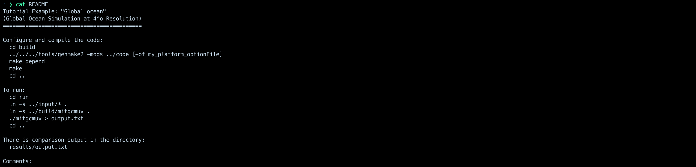
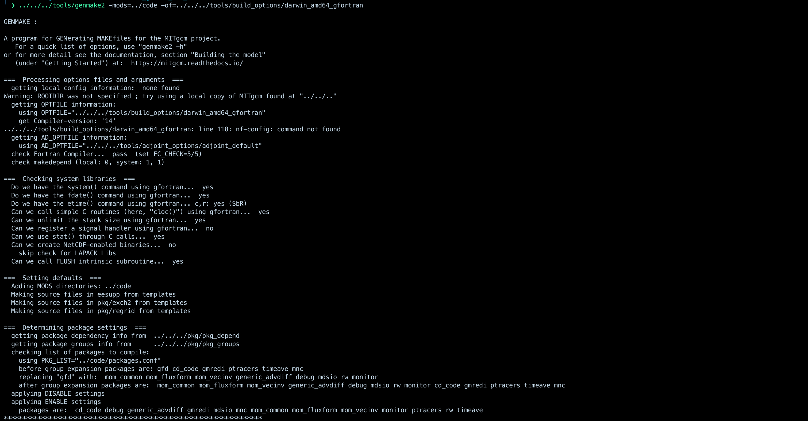
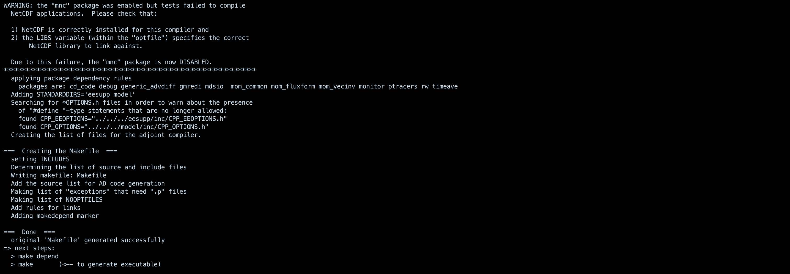

Installing MITGCM
This is me trying to run MITGCM tutorial
MITGCM Documentation
- Need to have
Xcode and homebrew installed
- Install git using homebrew:
install git
- Install gfortran, Fortran compiling:
brew install gcc
- Install other dependencies:
brew install make
- Working with git environment is more flexible allowing the version code to regularly updated as MITGCM developers check in bugs fixes and new features:
git clone https://github.com/MITgcm/MITgcm.git
- Choose the tutorial:
cd MITgcm/verification
- Displaying the files:
ls
- Go to the directory of the tutorial:
cd global_oce_latlon
- Use any view command of your choice:
cat, nvim, vim ,... to view the files in the directory
- For example, to view the README file:
cat README

- Generating the Makefile inside the build directory:
cd build
../../../tools/genmake2 -oad -of ../../../tools/build_options/linux_amd64_gfortran -mods ../code_oad


- Processing the source code to identify and record dependencies between source files. It ensures that the Makefile knows the order in which files need to be compiled and linked.
make depend
- Compiling and linking the code to build the executable model:
make
- Running:
cd run
ln -s ../input/* .
ln -s ../build/mitgcmuv .
./mitgcmuv > output.txt
cd ..
- Viewing the output:
cat run/output.txt